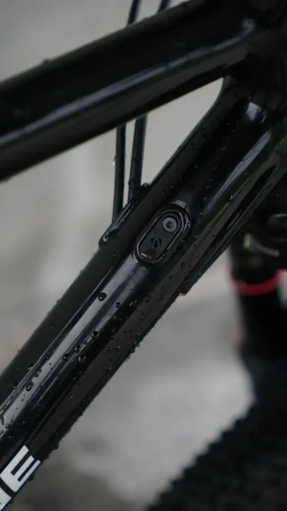

Starter 2016
The same starter, fed daily, ever since.
Bakery Owner · Portfolio
BAKERY OWNER
Sourdough with a three-day ferment and croissants that shatter.

About
Sourdough with a three-day ferment and croissants that shatter.
Everything on this page is made to be scrolled slowly. The work below is the honest list — outcomes attached, fluff removed.
Currently
Focus — Sourdough craft
Also — Lamination
Based — Tallinn
Selected work
The same starter, fed daily, ever since.

Twelve cafés, one delivery van, 6 a.m.
A limited bake that queues around the block.
Single-origin flours documented on the wall.
Saturday classes, sixteen seats, waitlisted.
Three farmers' markets, one tiny van.
Services
Sourdough with a three-day ferment and croissants that shatter. Sourdough craft is where this shows up most — ask for examples on a call.
Sourdough with a three-day ferment and croissants that shatter. Lamination is where this shows up most — ask for examples on a call.
Sourdough with a three-day ferment and croissants that shatter. Menu development is where this shows up most — ask for examples on a call.
Sourdough with a three-day ferment and croissants that shatter. Wholesale is where this shows up most — ask for examples on a call.
Sourdough with a three-day ferment and croissants that shatter. Oven management is where this shows up most — ask for examples on a call.
Sourdough with a three-day ferment and croissants that shatter. Team training is where this shows up most — ask for examples on a call.
Contact